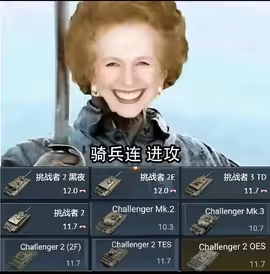

本文的蓝图改动全部由 UE5 自带的 MCP（Model Context Protocol）驱动 Python 脚本完成； 感谢 hy4 提供的夜间免费 token。
在一个已经做完的 UE5 FPS Demo 里，加了一辆能开、能打、有完整 HUD 的主战坦克。
配图：追尾视角实机截图（含准星与右下角弹药 HUD）
| 项 | 实测 | 参照 |
|---|---|---|
| 极速 | 53–55 km/h | 真车（挑战者 2）56 km/h |
| 相机 | 车后 8.3 m、上方 5.8 m、俯角 10° | 第三人称追尾 |
| 炮塔转速 | 40°/s 恒定（炮管 25°/s） | 有上限，不是瞬转 |
| 装填 / 备弹 | 3.5 s / 30 发 | 两道开火判定 |
| 实现方式 | 纯蓝图，运行时零 C++ | UE 5.8 / Chaos Vehicles |
| 改图方式 | MCP + 脚本化（丢文件即执行） | 单次改动十几秒 |
四个参数决定一辆坦克的性格：
| 参数 | 作用 | 调错的症状 |
|---|---|---|
| 整车质量 | 加速快慢与惯性 | 太轻像卡丁车 |
| 质心 Z | 稳定性 | 偏高则急转翻车 |
| 引擎扭矩曲线 | 低速爆发力 | 峰值来得太晚，起步发肉 |
| 弹簧刚度 | 悬挂软硬 | 太软像开船 |
A/B 实证 质心 Z = +150 → 急转弯翻车；Z = −100 → 稳定通过同一个弯。这是可复现的对照，不是"感觉好多了"。
实测对标 极速 53–55 km/h，对照真车 56 km/h，误差在测量噪声内（坡度、风阻、轮胎摩擦参数都会影响几个 km/h）。
调参方法（三步，可复现） 1. 先按公式给近似值（轮子半径按车高、轮距按车宽、质心按重心位置） 2. 用引擎的调试可视化看轮子受力与接地点，不靠眼睛猜 3. 微调 → 再跑同一条测试路线做对比
前提：不要拍数字。轮子半径、轮距这些必须由车体尺寸推出来，否则车体一改就全废。
1. 炮弹只位移、不碰撞 症状：炮弹飞出去，穿过地面飞到看不见。 原因：弹道组件没有绑定碰撞体——根节点是个空场景组件。 修法：把碰撞体显式设为移动组件的目标组件。
2. 炮弹生成在自己车体里 症状：一开炮就炸在自己身上。 原因：炮口偏移太短，出生点还在车体包围盒内。 修法：炮口距离必须大于半个车长（约 470 cm）。
3. 炮塔"转速没有上限" 症状：准星永远在追炮塔，转向毫无重量感。 原因：用了指数插值——误差越小越慢，但误差大时速度趋近无穷。 修法：换成恒定角速度插值（40°/s）。
4. 输入互相污染 症状：上车后步兵视角被坦克抢走。 原因：FPS 与坦克共用一套输入映射。 修法：两套完全独立的映射上下文，用"被占据"事件切换。
5. 弹药被静默清空，一炮打不出 症状：按开火毫无反应，日志也没有报错。 定位：开火有两道判定（装填完成 + 有弹药），弹药被某处重置为 0，第二道判定直接拦下且无提示。 修法：上车时初始化一次弹药状态（也符合"上车补弹"的直觉）。
这个项目 90% 以上的改动是"接线 + 查引脚"，纯手点是不现实的——手点一次十几分钟，而且不可复现。
整套工作流是三层：
| 层 | 做什么 | 用什么 |
|---|---|---|
| 读取 | 把蓝图的图结构暴露出来：节点、引脚、连线、默认值 | UE5 自带的 MCP 服务 |
| 执行 | 脚本丢进指定目录即自动执行，不用切窗口、不用重启编辑器 | 一个文件指令队列钩子 |
| 校验 | 改完立即编译 + 读回状态，确认无误再落盘，顺手存一份备份 | 引擎的编译与保存接口 |
一条改动的典型流程 读图结构 → 生成脚本 → 丢进队列 → 编辑器执行 → 编译并读回状态校验 → 落盘 + 备份存档。
收益 - 单次改动从十几分钟压到十几秒 - 每次改动都有脚本留档，可复现、可回滚，出错能定位到具体是哪一次改动 - 反复失败也不会污染工程：每轮都先备份
代价（这部分才是重点） - 脚本一旦持有已失效的对象引用，会直接让编辑器崩溃——所以每次改图后必须重新取引脚信息，绝不缓存 - 不能假设执行顺序：脚本会让编辑器"泵消息循环"，回调可能被嵌套触发，所以必须先记账再执行 - 中文环境下的节点/引脚搜索常常返回多个同义项，必须按 id 精确匹配，不能取第一个——我在这上面错接过两次线
现在能单独转的每一个部件，都是在 Blender 里从整车模型上拆出来的。
这一步的收益在后面才体现：没有拆分，炮塔追击视角、炮口生成点、HUD 上的炮塔指向，一个都做不了。
物理层 UE5 没有履带物理方案，采用"履带外观 + 4 个隐藏轮"的折中。轮子参数由公式推出，不拍数字。整车参数：质量、质心、扭矩曲线、弹簧刚度。
操作层 两套独立输入映射，靠"被占据 / 被放弃"事件切换。键位：W/S 油门与倒车、A/D 转向、空格手刹、左键开火。 踩过的坑：引擎的"倒车即刹车"开关会让刹车与倒车打架。
规则层 炮塔读相机臂的偏航，用恒定角速度追赶，形成"准星在前、炮口在后"的坦克手感。开火两道闸门：装填完成 + 有弹药。 HUD 用四角方框表示相机朝向、圆环表示炮塔实际朝向，两者重合时变色；圆环的位移必须按真实投影比例换算，不能拍固定像素值。
现象：转动车体或切换视角后，炮塔准星（圆环）会跟着相机一起偏，而不是稳定反映炮塔的真实朝向。玩家看到的"炮口指向"和实际的炮弹出膛方向会对不上。
原因：炮塔的瞄准目标取自相机臂的局部旋转——相机和炮塔共用了一部分状态。这是设计期的耦合，不是单纯的接线错误，所以修起来不能靠补线，得改结构。
彻底的解法：把炮塔的瞄准目标从"某条相机臂的角度"改成世界空间的目标点，让相机和炮塔各自独立。这件事没做完，所以现在这套 HUD 只能算"能看"，不算"可信"。
现在只有"装填完成 + 有弹药"两道判定，缺的东西还很多：
关键参数 缩放 1.0548（车体长对齐真车 8.33 m）；履带接地微陷约 7 cm；炮塔 40°/s；炮管 25°/s；装填 3.5 s；备弹 30 发；相机 FOV 80。
操作 走近触发区自动上车，按 E 下车。

这张图放在最后——它和正文的技术内容无关，但它才是这个 Demo 的起点。